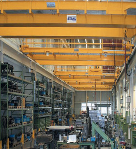

Pontes Rolantes: solução em elevação e transporte de cargas
Pontes rolantes são equipamentos indispensáveis para que empresas consigam atingir maior produtividade, adotando um sistema de movimentação seguro, dinâmico e preciso. Uma maneira mecânica e planejada de transporte e elevação gera maior produtividade e oferece muito mais segurança aos operários.
Graças à tecnologia Stahl, maquinários específicos e direcionados são utilizados para facilitar o processo industrial. As pontes rolantes são disponibilizadas em diversos modelos e são exemplo de como a movimentação ou elevação de materiais pode funcionar com mais segurança e agilidade, tornando possível o manuseio de cargas extremamente pesadas. Além disso, pontes rolantes possuem uma excelente desenvoltura em grandes percursos.

Modelo de ponte rolante Stahl/ Fonte: www.stahl-talhas.com.br
Pontes rolantes possibilitam aplicação em projeções que requerem altas ou baixas temperaturas e como são planejadas para cada aplicação, proporcionam maior produtividade.
Com grande eficiência e precisão para elevar cargas em diversas proporções, as pontes rolantes são fabricadas em três grupos:
O grupo de 30000 a 150000N tem capacidade para movimentar materiais com peso que varia entre 3 e 5 toneladas;
O grupo médio (de 200000 a 3 5000000N) comporta de 20 a 50 toneladas;
O grupo pesado (de 500000 a 1200000N) suspende de 50 a 120 toneladas.
Equipadas com motores de rotor cilíndrico, as pontes rolantes da Stahl tem um baixo nível de ruído. A carga é transportada por movimentos suaves, garantindo seu mínimo balanço. Além disso, este motor não coloca em risco a saúde auditiva de quem opera a ponte rolante, o que observa normas importantes de segurança no trabalho. Pontes rolantes são sinônimo de inteligência, eficiência e produtividade.
Os modelos de pontes rolantes disponíveis são:
Ponte Rolante Apoiada:
Com viga de carga em perfil laminado ou ainda composto por chapas, a ponte rolante apoiada corre por cima dos trilhos e possui travamento horizontal que impede o balanço lateral.
Pontes Rolantes Suspensas:
Erguidas em estrutura base, pontes rolantes suspensas normalmente dispensam a necessidade de construção de colunas específicas para o caminho de rolamento. Seus trilhos são sustentados pelas próprias colunas de concreto do prédio ou por colunas de aço. Deste modo, é possível obter um melhor aproveitamento da área do edifício para a produção e movimentação das cargas.
Ponte Rolante Univiga:
Construída por duas cabeceiras, possuem uma única viga e um ou dois carros trolley que correm na parte inferior do equipamento, sustentando as talhas. Com um controle geométrico, a ponte rolante univiga realiza uma excelente performance nos movimentos horizontais, impedindo o balanço lateral na produção e garantindo mais segurança na produção.
Ponte Rolante Dupla-Viga:
A ponte rolante dupla-viga é um equipamento moderno, que aproveita bem a altura disponível da estrutura, pois seu gancho pode ser içado entre duas vigas, possibilitando uma boa e segura movimentação da carga. Ademais, possui movimentos precisos, que reduzem desgastes de trilhos e rodas.
Com o devido treinamento e conhecimento dos diferentes grupos e modelos de pontes rolantes, a operação deste maquinário se torna extremamente eficiente e segura, proporcionando para as empresas uma solução eficiente em transporte de cargas pesadas.
Produtos STAHL:
- Talha elétrica de corrente
- Talhas elétricas de cabo de aço
- Ponte rolante apoiada univiga
- Ponte rolante apoiada dupla-viga
- Pontes rolantes suspensas
- Guindaste giratório
- Monovias
- Blocos de rodas
- Kit de componentes
Peças sobressalentes; manutenção preventiva e corretiva
Consultoria especializada em transporte e movimentação de carga e fornecimento de componentes para outros fabricantes.
Todos os equipamentos podem ser fornecidos na versão á prova de explosão.